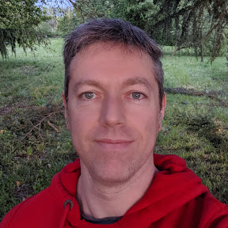

📱
WealthAI
Applicazione mobile per il controllo del peso corporeo e dell'alimentazione con il supporto dell'intelligenza artificiale.
- Mobile app
- Python
- AI
Analista sviluppatore software
Da oltre vent'anni progetto, sviluppo e manutengo applicazioni desktop e web, su Linux e Windows, oggi con un focus su Python, ReactJS e integrazione con l'AI. Curioso, appassionato di tecnologia e innovazione, mi trovo a mio agio nel lavoro in team, in presenza e da remoto.
Sono Franco, un professionista con esperienza pluriennale nel settore informatico nel ruolo di analista sviluppatore, su applicazioni desktop e web.
Mi distinguo per l'ampio ventaglio di competenze acquisite negli anni, lavorando sia su progetti che su prodotti: dal gestionale su IBM AS/400 alle web app moderne, fino all'integrazione con l'intelligenza artificiale.
Ottime doti di comunicazione interpersonale, amante del lavoro in team, atteggiamento propositivo e proattivo nella risoluzione di problematiche anche complesse.
Formazione: Perito elettrotecnico — ITIS Magistri Cumacini, Como.
Lingue: Italiano (madrelingua), Inglese (B2).
Interessi: tech e coding, trekking, kickboxing, snowboard, corsa, moto, bici, cinema e serie TV, chitarra elettrica, immersioni subacquee.

Analisi, sviluppo e manutenzione software, con integrazione di soluzioni di intelligenza artificiale. Architetture Linux, Windows, MacOS e Raspberry Pi; sviluppo in VSCode con AI (Claude Code).
Analisi, sviluppo e manutenzione di software gestionale all'interno del reparto R&D. Architetture Linux, Windows, Windows Mobile, Raspberry Pi, Arduino e IBM AS/400; IDE Netbeans, Eclipse, IntelliJ, TN5250j.
Analisi, sviluppo e manutenzione di software gestionale. Architetture Linux, Windows, Windows Mobile e IBM AS/400; IDE Netbeans e TN5250j.
Analisi, sviluppo e manutenzione di software gestionale su architetture Windows e IBM AS/400.
Applicazione mobile per il controllo del peso corporeo e dell'alimentazione con il supporto dell'intelligenza artificiale.
Web app per la gestione e il monitoraggio degli accessi ad una palestra tramite riconoscimento facciale.
Web app per il controllo remoto di un modellino rover 4WD basato su Raspberry PI
App mobile per la gestione dell'inventario assistita dall'intelligenza artificiale.
Web app per il controllo della temperatura ambientale tramite termostato basata su Raspberry Pi.
Interprete open source che esegue programmi RPG sulla JVM: progetto a cui ho contribuito in SmeUP.
05. E adesso?
Se hai un progetto interessante o vuoi semplicemente metterti in contatto, scrivimi.
Scrivimi